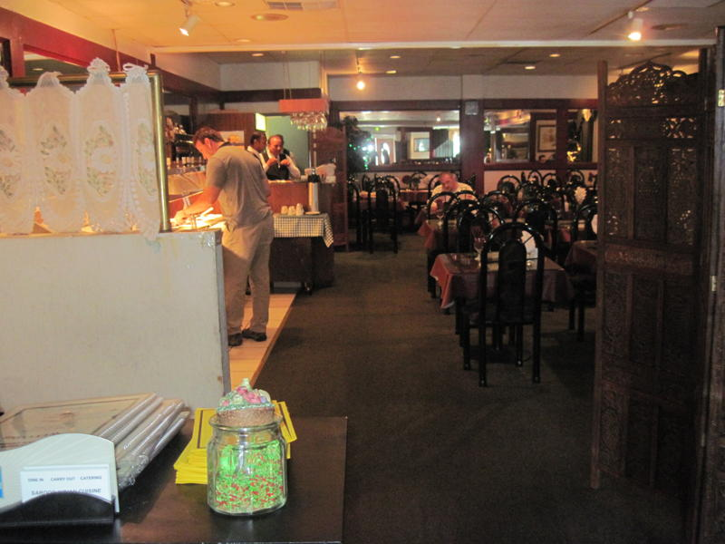
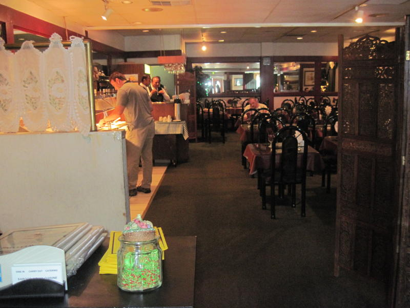
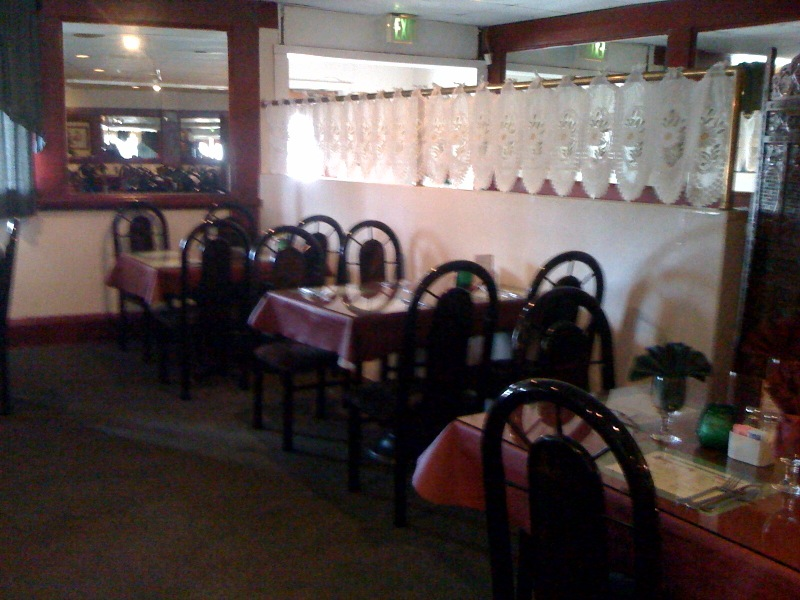
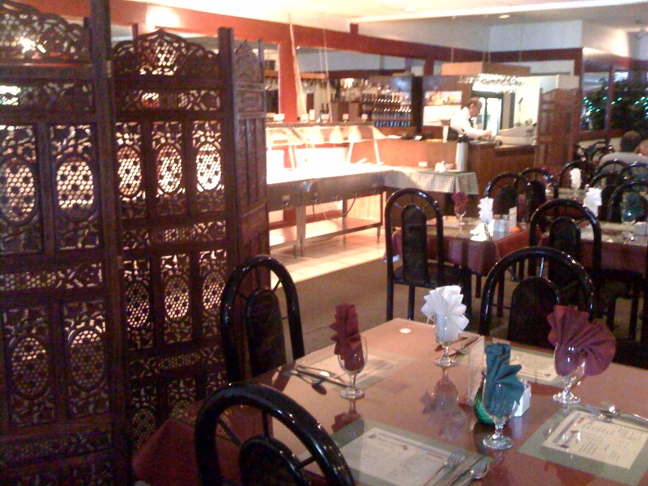
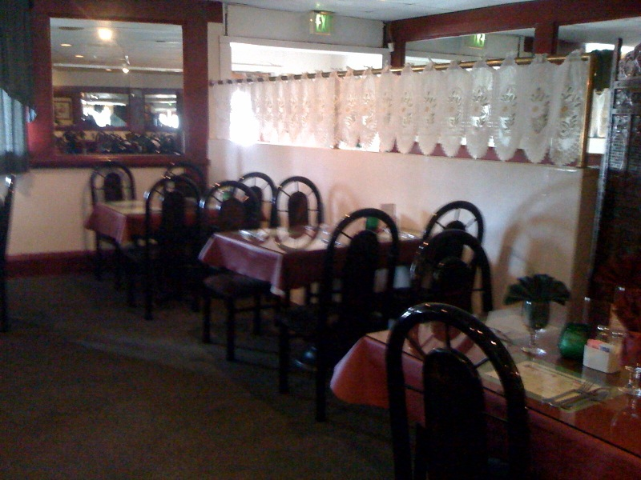
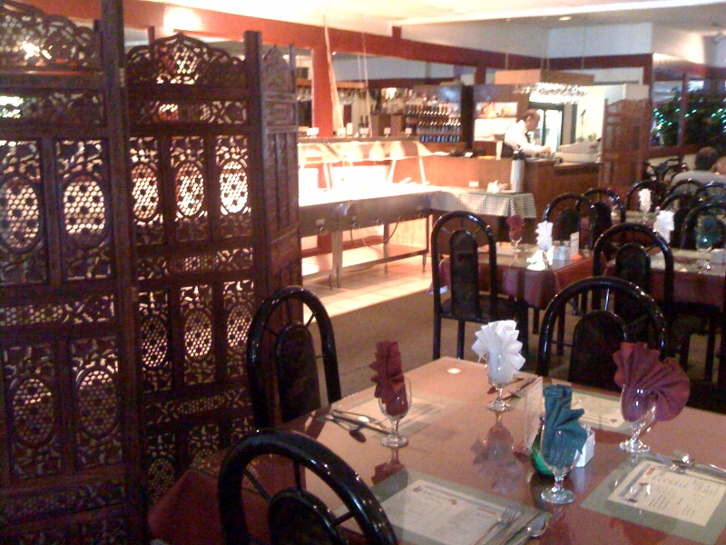

Reviews
I do not understand why this place is not more crowded, unless everyone takes out like we do.
I have eaten Indian food many times at many restaurants, including in Fremont where you expect it all to be fantastic, and this place is still the best.
Their chicken tikka masala is to die for and the saag paneer is so creamy and delicious.
The Roti, wheat naan, is by far our favorite of the naans and always fresh and soft.
We did opt out of the tikka masala on the most recent trip, but ordered the chicken tikka kabab.
It is so good and without the sauce, a little lighter on the calories.
The meal was just as big a hit with us.
YOU ALL NEED TO TRY THIS PLACE.
It is off the beaten path in Walnut Creek, but easy parking and well worth it.
Then you can drive back to downtown for you evening shopping or movies.
Jennifer P. (Oakland)
I have been coming here for years and it is really some of the best Indian food I have had in the Bay Area.
As an added bonus, the servers are friendly and efficient.
I have my favorites (chicken tikka masala and lamb saag are wonderful), but nothing I have tried here has ever let me down.
I usually order take out and the portions are big enough to last for at least 2 leftover servings.
There is always a coupon for $8 off a second entree at the Bay Area Coupons webisite that you can print out at home.
Google "Saroor coupons" to find it.
Even if the coupon says it has expired a month or so ago, Saroor will still honor it since they are always issuing the same coupon in mailers.
The lunch buffet is awesome too, although they always serve the same things.
It's a good way to try multiple dishes.
But take out (with the coupon) is the way to go for the most bang for your buck.
Christian M. (San Francisco)
The people here are really friendly, and the food is delicious!
I always bring a coupon (usually valpak or golden mailer) and get take out, they give really large portions on take out!
My favorite is the Saag chicken and the butter chicken, ordered with a side of rice and 2 naan is about $15-$20 with The coupon.
Food is always fresh and tasty... they even make it to order (my husband doesn't do butter or cream, and they always accommodate).
Heather S. (Walnut Creek)
This place is the best in Walnut Creek.
In a few words:
Ambiance - Good
Food - Excellent
Portion - Appealing
Price - Very Very Fair
Service - Super
What else does any customer need??
Try out this place... worth your money.
Enjoy..... yummy food!
Deepika R. (Walnut Creek)
This is the best Indian buffet I've found for lunch in and around Concord/Pleasant Hill/Walnut Creek.
This place was originally recommended by some of our Indian coworkers as being the best place in town (for buffet).
I've been here many many times and will continue to come here.
Ken L. (San Francisco)
for more reviews, visit

 

 


